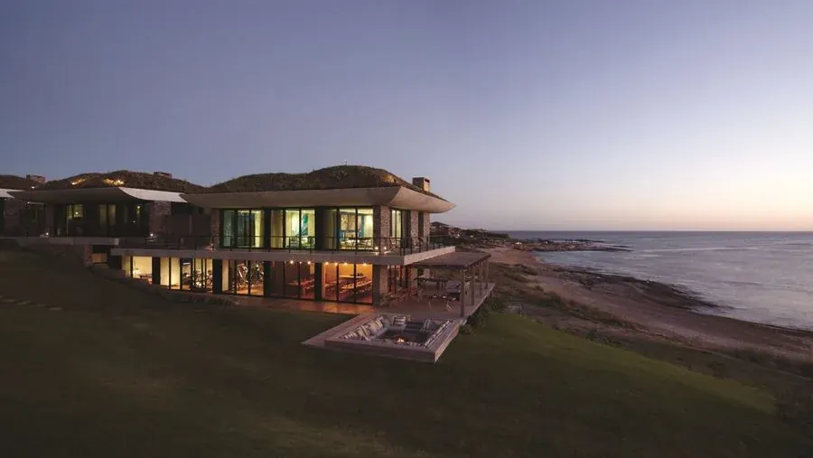
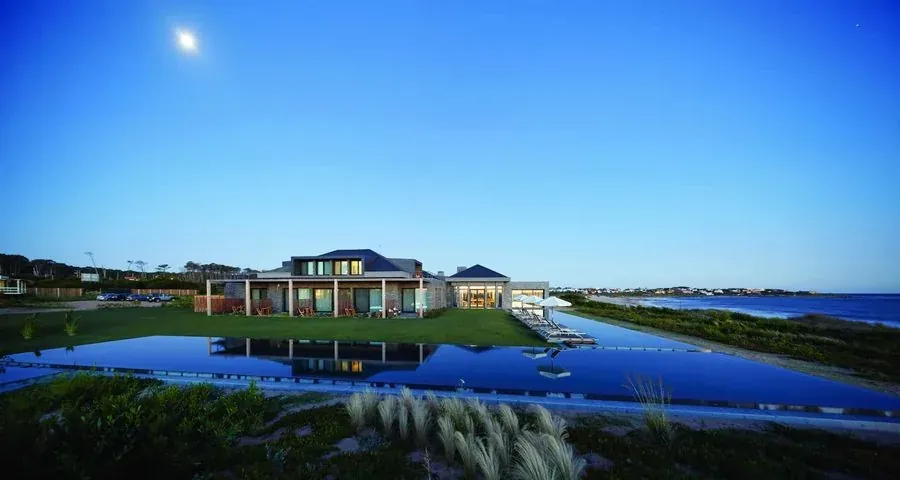
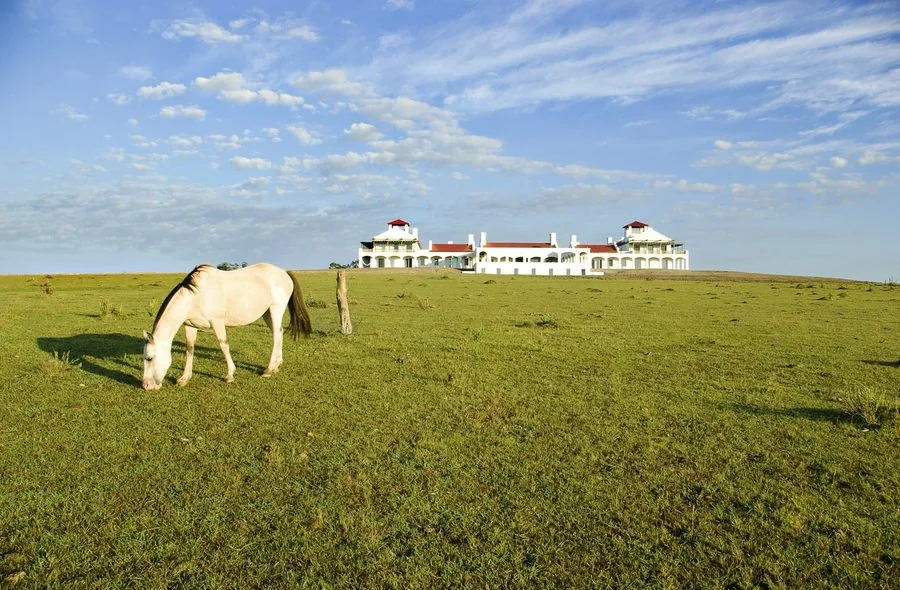
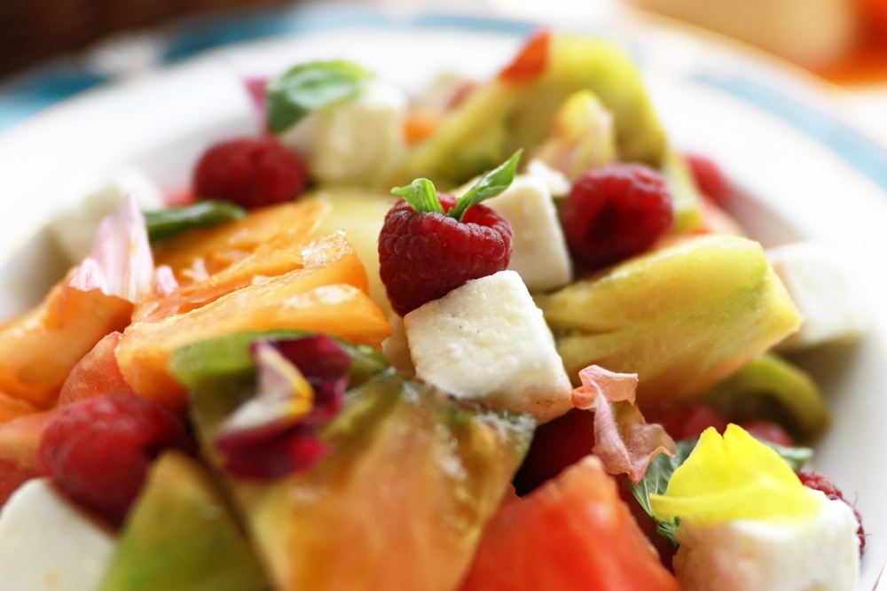
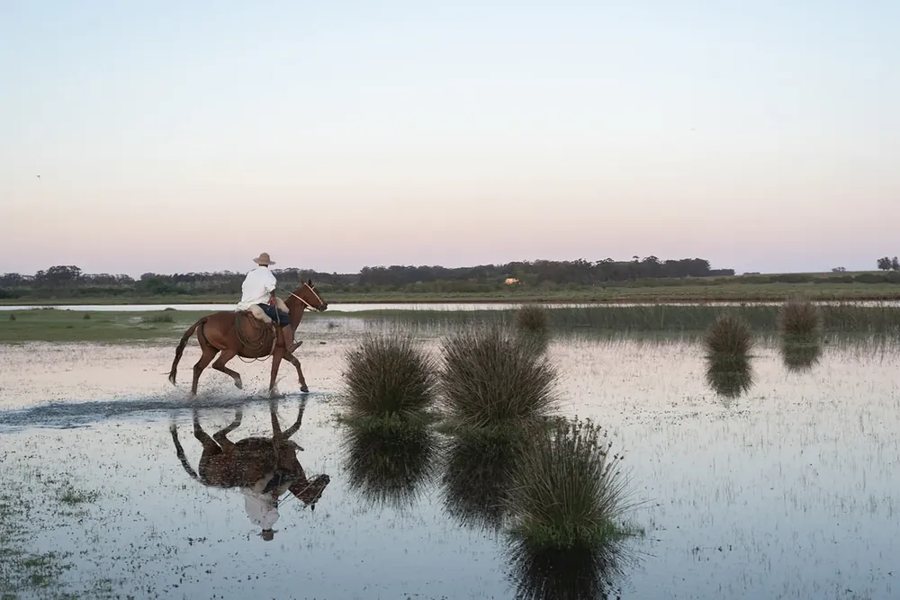
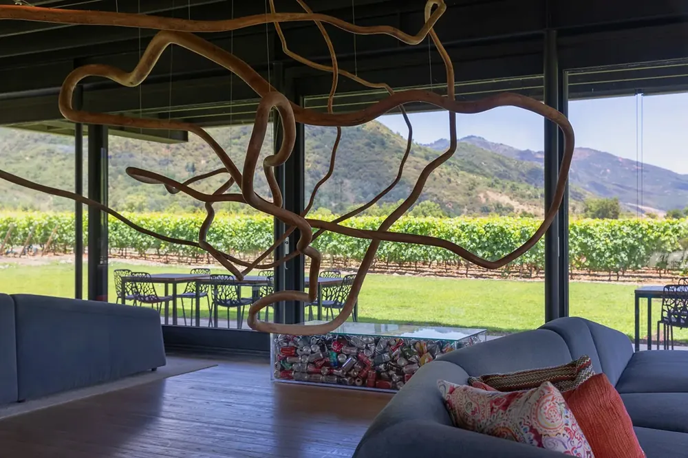
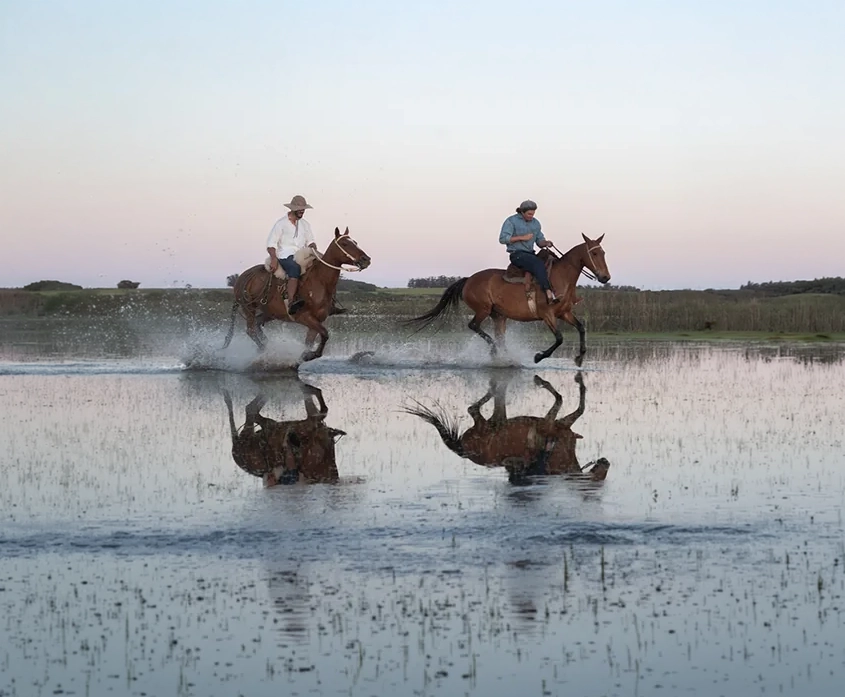
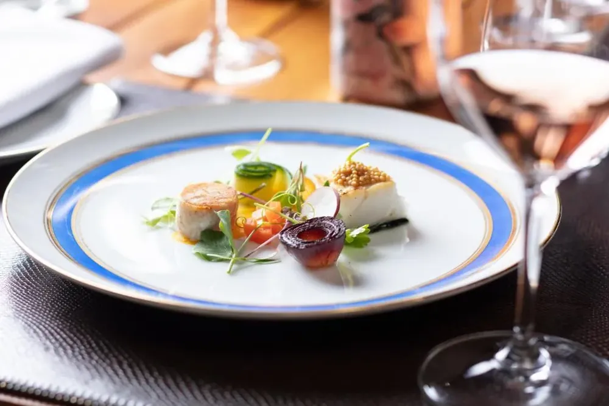
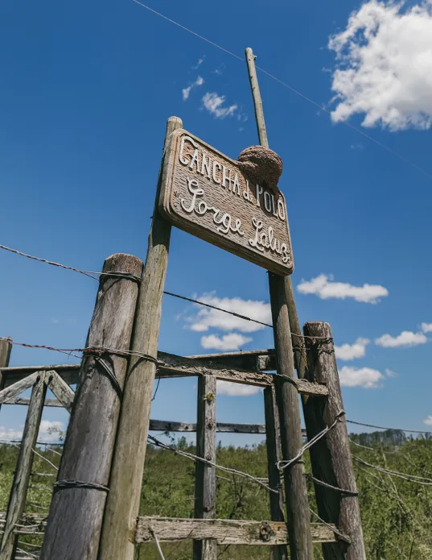
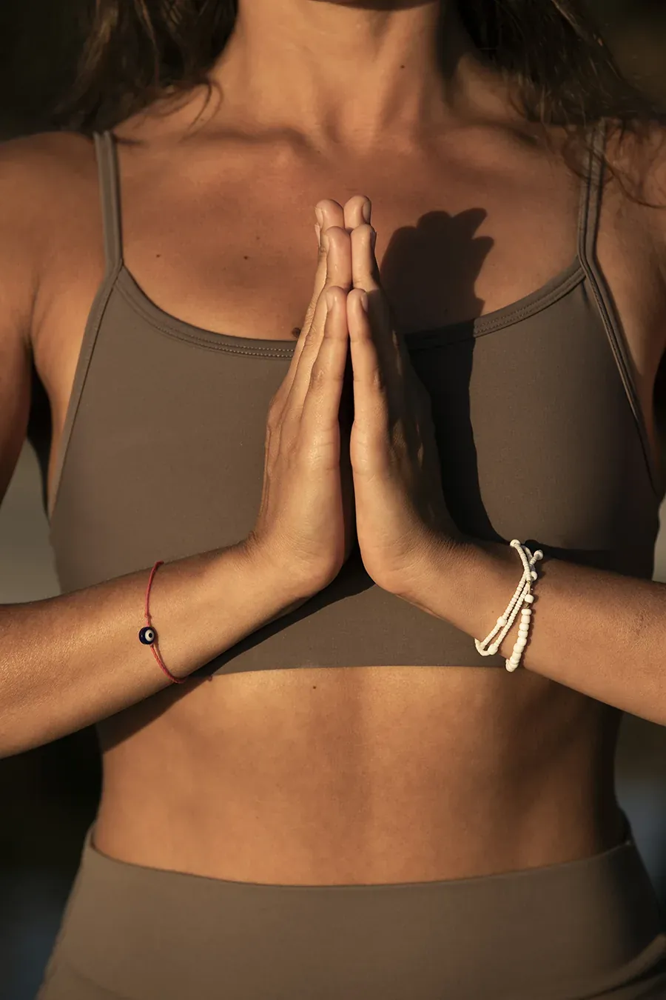

On the waterMorning
Kayak the calm side.
Before midday, the José Ignacio Lagoon is quiet and still. Two kayaks, life jackets and a guide wait at the water’s edge.
A flexible collection of reusable modules, made to tell each VIK story in its own way. Combine them into new page narratives while keeping the same visual rhythm, intuitive interactions and unmistakable sense of place.

Four thousand acres of open country, horses and open-fire gastronomy, rooted in Uruguayan tradition. Twelve suites, each one commissioned from a different artist.
Design bungalows set into the dunes of Playa Mansa, on the calm side of the peninsula. The most social of the three, and the easiest with children.
Carlos Ott architecture on the point, with the Atlantic on three sides. Contemporary art in every room, a black granite pool, and almost no one else.
 Countryside
Estancia VIK
Countryside
Estancia VIK
Four thousand acres of open country, horses and open-fire gastronomy, rooted in Uruguayan tradition.
 Oceanfront
Playa VIK
Oceanfront
Playa VIK
Carlos Ott architecture and contemporary art above the point, with the Atlantic on three sides.
 Playa Mansa
Bahía VIK
Playa Mansa
Bahía VIK
Design bungalows set into the dunes. Relaxed, social, and the easiest of the three with children.
 Venue · Oceanfront
Pavilion VIK
Venue · Oceanfront
Pavilion VIK
The cultural and celebration venue of the destination. Weddings, retreats and programming.
 Dining · Playa Mansa
La Susana
Dining · Playa Mansa
La Susana
Beachfront dining, music and the sunset ritual that defines a José Ignacio evening.
 Club · Estancia Vik
Club Polo Vik
Club · Estancia Vik
Club Polo Vik
The equestrian and athletic club of the destination. Polo, horsemanship and estancia life on open country.
 Wellness · Across the three
The Shack
Wellness · Across the three
The Shack
Movement, strength, recovery and treatments — nature-led wellbeing across the destination.
Between the ocean and the countryside, a connected world of art, design, nature, gastronomy, wine, wellness and the unmistakable rhythm of Uruguay.
 Estancia VIK
Countryside · 20 min inland
Four thousand acres, horses and fire. The Uruguay that existed before the coast was discovered.
See the case→
Estancia VIK
Countryside · 20 min inland
Four thousand acres, horses and fire. The Uruguay that existed before the coast was discovered.
See the case→
 Playa VIK
Oceanfront · on the point
Carlos Ott architecture and contemporary art, with the Atlantic on three sides and almost no one else.
See the case→
Playa VIK
Oceanfront · on the point
Carlos Ott architecture and contemporary art, with the Atlantic on three sides and almost no one else.
See the case→
 Bahía VIK
Playa Mansa · in the dunes
Design bungalows in the beach dunes on the calm side. The most social of the three, the easiest with children.
See the case→
Bahía VIK
Playa Mansa · in the dunes
Design bungalows in the beach dunes on the calm side. The most social of the three, the easiest with children.
See the case→
Everything below is arranged by your Journey Designer, whichever retreat you are staying in.
Before midday, the José Ignacio Lagoon is quiet and still. Two kayaks, life jackets and a guide wait at the water’s edge.
Beachfront tables, music and the hour when the whole coast faces the same way.
Loungers, lunch that runs into dinner, and nobody checking the time.
Criollo and Quarter horses across open pampas, from the Estancia to the lagoon. The signature Vik experience.
Season play on the Estancia fields. Watch from the grass with a glass in hand, or take a lesson the morning after.
Before the heat, when the yard is being swept and forty horses are waiting to go out.
Movement, strength, treatment and rest, on the dune deck.
A programme built around rest: breathwork, light, temperature and the sound of the water.
Heated through the night. The lights come on by themselves at dusk and nobody asks you to book.
Pick from the garden, then cook it over embers.
Poured by the sommelier, with the story of the valley they come from.
Baked at five, out by seven, and gone by nine. The oven is lit before anything else on the property.
Every Vik room was commissioned from a different artist. See the works, the chapel and the sculpture terrace with the house curator.
Commissioned, built and painted for this hill. Opened on request, best at the end of the day.
The cultural venue of the destination: music, talks and the occasional long dinner.
Out past the last fence, where the land stops being landscaped and starts being country.
The herd moved between paddocks the way it has been moved for a century, with dogs and without hurry.
Four thousand acres and everything on the plate comes from the half hectare behind the house.
Every VIK building is a commission. Architecture, interiors and furniture designed for the place they stand in.

Each retreat is formed by its landscape, its local identity and the seasonal rhythm of the coast.

VIK wines from the Millahue Valley run through every list, every pairing and every cellar.

Local, seasonal, farm-to-table and open fire. Dining as a shared cultural experience.

Movement, recovery, nourishment, sleep, social connection and balance — built into the stay.

Journey Designers, personal itineraries and human service. Warm, but sophisticated.

José Ignacio transforms across the year. Peak season is vibrant, social and full of events. March and the shoulder season are quieter, more intimate and restorative. The countryside is at its best when the coast empties.
 Wellness
· 08:00
Yoga on the deck
Wellness
· 08:00
Yoga on the deck
 Countryside
· 10:30
Ride before sunset
Booked
Countryside
· 10:30
Ride before sunset
Booked
 Open fire
· 13:00
Country breakfast
Open fire
· 13:00
Country breakfast
 On the water
· 16:00
Kayak in the bay
On the water
· 16:00
Kayak in the bay
 Cellar
· 19:00
Viña Vik tasting
Booked
Cellar
· 19:00
Viña Vik tasting
Booked
 Evening
· 21:30
Bonfire by the sea
Evening
· 21:30
Bonfire by the sea
 Open
· 00:00
Heated pool, all night
Open
· 00:00
Heated pool, all night
Two on the water, one inland. Close enough to have dinner at another house and be back before midnight.
An estancia reimagined as a living gallery, where the art was made for the room it hangs in.Architectural Digest2018
The most architecturally ambitious house on this coast, and the least interested in saying so.Wallpaper*2019
Three houses a few kilometres apart, held together by one singular sense of place.Condé Nast Traveler2021
Bookassist · PayPal accepted
Best rate, booked direct
guestexperience@vikretreats.com
Set within the countryside of Estancia Vik, the Equestrian & Athletic Club is a social and athletic community rooted in performance, tradition and connection to the land.
Estancia Vik · José Ignacio, Uruguay
Twelve suites and a titanium roof above the Atlantic, with the ocean on three sides and a contemporary collection hung through every room of the house.
Half a hectare behind the house feeds four kitchens. What is not cut that morning is not on the menu that night — a constraint the chefs asked for rather than one imposed on them.
Walk the garden→Every room was given to an artist before a guest ever saw it. You sleep inside the work rather than beside it, and no two rooms argue the same thing.
The collection→Bahía sits inside the dunes rather than on top of them. Nothing was flattened to build it, and the sand still moves across the paths every September.
See Bahía VIK→




From three in the afternoon, and we hold the room until you arrive however late that turns out to be. If you land in the morning, tell your Journey Designer and we open it early whenever the house allows.
Yes, and a good number of guests do. Dining, wellness and every experience are open to anyone staying at any of the three, and the transfers between them are arranged for you.
Forty minutes by road, and the two feel like different countries. That distance is the point rather than the inconvenience — it is why one week can hold both.
A Journey Designer answers, not a form.
The houses were handed to artists before they were handed to guests. Nothing is roped off and nothing is captioned — if you want to know what you are looking at, the curator walks it with you on Thursdays.
Walk the collection→Playa VIK · Architecture by Carlos Ott
You do not visit this coast.You end up livingon its hours.Condé Nast Traveler





One person who knows your week before it starts, and rearranges it when the wind turns.
Punta del Este in fifty minutes, Montevideo in two hours ten, arranged either way.
Any table in the house, the garden, the dunes or the beach, with the chef who cooks it.
The collection with the person who hung it. Thursdays, and by arrangement.
Two rides a day, plus lessons from the ground up for anyone who has never sat on a horse.
By the hour or the day, and the same person for the whole stay rather than a rota.
Tastings of the Millahue wines with someone who worked the harvest they came from.
The lagoon, the bay and the fishing grounds off the point. Skippered, or not.
Open views of the guest journey. Static previews for visual review.
Payment details are completed securely with the booking provider.
You will be handed to PayPal to approve the amount, then returned here.
The room is held for 24 hours. A Journey Designer writes to confirm and takes payment however suits you.
{kind=link}
{kind=link}
{kind=link}
{kind=link}
{kind=link}
{kind=link}
{kind=link}
{kind=link}
{kind=link}
{kind=link}